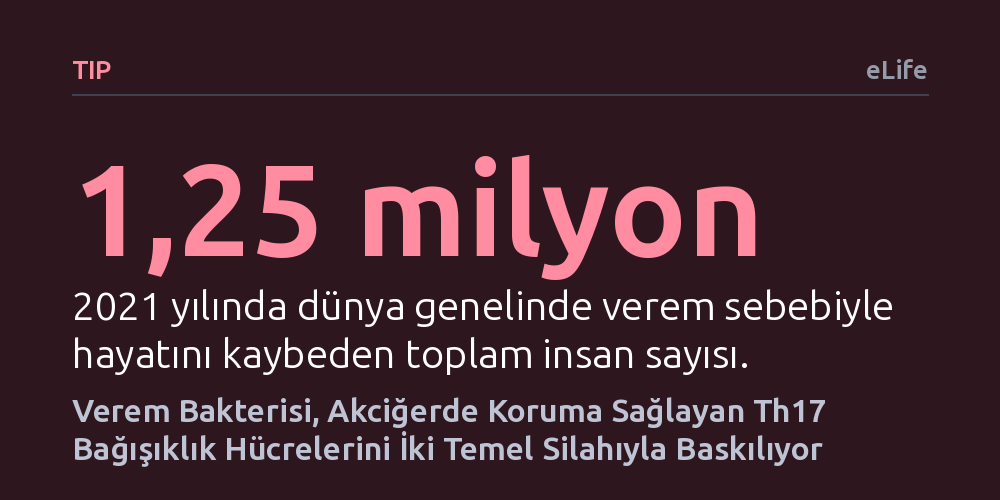

TIP · eLife · 2026-10-26
Araştırmacılar, verem bakterisinin akciğerde koruyucu Th17 bağışıklık hücrelerini neden tetiklemediğini fare modellerinde inceledi. Deneyler, bakterinin ESX-1 salgı sistemi ve PDIM yağıyla IL-23 üretimini engelleyerek koruyucu Th17 hücrelerinin oluşumunu aktif biçimde baskıladığını gösterdi.
Verem mikrobunun bağışıklık sisteminden pasifçe kaçmak yerine, koruyucu hücreleri kendi molekülleriyle doğrudan baskıladığını ortaya koyarak etkili aşı geliştirme çalışmalarına yeni bir yön veriyor.

Verem (*Mycobacterium tuberculosis*), modern tıbbın tüm ilerlemelerine rağmen yılda bir milyondan fazla insanın hayatına mal olan en ölümcül bulaşıcı hastalıklardan biri olmayı sürdürüyor. Günümüzde kullanılan tek aşı olan BCG aşısı, çocukları veremin ağır ve yaygın türlerine karşı korusa da yetişkinlerde akciğer tüberkülozuna karşı yetersiz kalıyor ve sağladığı koruma zamanla kayboluyor. Bugüne kadar geliştirilen aşı adaylarının büyük çoğunluğu, bağışıklık sisteminin klasik "Th1" savunma hücrelerini ve bunların ürettiği interferon-gama molekülünü artırmaya odaklandı. Ancak kandaki yüksek interferon seviyeleri hastalığı tek başına durdurmaya yetmiyor; hatta aktif verem hastalarının akciğerlerinde bol miktarda bulunmasına rağmen enfeksiyon kontrol altına alınamıyor.
Son yıllardaki araştırmalar, akciğer gibi mukoza yüzeylerinde esas korumanın "Th17" adı verilen farklı bir yardımcı bağışıklık hücresi grubu tarafından sağlandığını ortaya koydu. Hayvan modellerinde deneysel aşılarla bu hücreler uyarıldığında güçlü bir koruma elde ediliyor ve insanlarda da bu hücrelerin varlığı dirençle ilişkili görünüyor. Ne var ki doğal verem enfeksiyonu sırasında vücut bu koruyucu Th17 hücrelerini neredeyse hiç üretemiyor. Bilim dünyası uzun süredir şu sorunun yanıtını arıyordu: Bakteri doğrudan solunum yoluyla girdiği halde, akciğerde bu koruyucu hücre kümesi neden devreye giremiyor?
Araştırmacılar ilk olarak Th17 eksikliğinin enfeksiyonun süresinden ya da mikrobun vücuda giriş yolundan kaynaklanıp kaynaklanmadığını test etti. Deney fareleri hem solunum yoluyla aerosol halinde hem de burun damlası yoluyla standart dozda verem basiliyle enfekte edildi ve hayvanlar 170 güne varan uzun süreler boyunca takip edildi. Süre uzasa da bulaşma yolu değişse de yabani tip bakterinin Th17 yanıtı oluşturmadığı netleşti. Bunun üzerine araştırmacılar, klasik Th1 hücrelerini yöneten T-bet geninden yoksun özel fare modellerini incelemeye aldı.
İkinci aşamada ise şüpheler doğrudan bakterinin kendi cephanesine yöneldi. Verem mikrobunun konak hücre zarlarını delmekte kullandığı "ESX-1" salgı sistemi ile dış yüzeyindeki karmaşık yağ molekülü "PDIM" mercek altına alındı. Araştırma ekibi, bu iki yapıdan yoksun bırakılmış genetik mutant bakteri suşları üretti ve bunları kontrol suşlarıyla karşılaştırmalı olarak denedi. Bakterinin genel olarak yavaş çoğalmasının sonuçları yanıltmadığından emin olmak için de ilgisiz başka bir taşıyıcı proteini (MmpL4) eksik olan üçüncü bir mutant suşla kontrol deneyi yapıldı. Akciğerlerdeki bakteri sayıları ve lenf bezlerindeki bağışıklık hücreleri tek tek sayıldı.
Deney sonuçları, verem mikrobunun bağışıklık sistemini pasif biçimde atlatmadığını, koruyucu hücrelerin oluşumunu kendi araçlarıyla doğrudan durdurduğunu gösterdi. T-bet geninden yoksun farelerde, normal farelere kıyasla 25 kat daha fazla IL-17A üreten Th17 hücresi oluştu ve bu fareler enfeksiyonun ilk haftalarında bakteriyi normal fareler kadar başarıyla kontrol etti. Ancak bu farelerden IL-17A sinyali genetik olarak çıkarıldığında akciğerdeki bakteri yükü aniden 10 kat arttı. Bu sonuç, Th17 hücrelerinin erken enfeksiyon döneminde tek başlarına dahi güçlü bir savunma kalkanı oluşturabildiğini kanıtladı.
Asıl belirleyici bulgu bakteriyel mutantlarda elde edildi. ESX-1 salgı sistemi veya PDIM yağı bulunmayan verem suşlarıyla enfekte edilen farelerin akciğerlerinde, yabani tip bakteriye kıyasla yaklaşık 10 kat daha yüksek IL-17A seviyesi ve belirgin bir Th17 artışı ölçüldü. Yavaş çoğalan diğer kontrol mutantında bu artış görülmedi; yani baskılama doğrudan bu iki silaha özgüydü. Hücresel mekanizma incelendiğinde, bu iki etkenin akciğer lenf bezlerindeki dendritik hücrelerin IL-23 salgılamasını kestiği tespit edildi. Bakteri, Th17 gelişimini tetikleyen IL-23 sinyalini kapatıp konak yanıtını yetersiz kalan Th1 yönüne hapsediyordu.
Bu çalışma, verem mikrobunun konak bağışıklık sistemini kendi çıkarları doğrultusunda nasıl manipüle ettiğini belgeliyor. Bakteri, kendisini tamamen ortadan kaldırmakta yetersiz kalan Th1 yanıtını tetiklerken, akciğer dokusunda kendisini etkili şekilde temizleyebilecek olan Th17 yanıtını IL-23 musluğunu kısarak engelliyor. Geleneksel aşı yaklaşımlarının neden klinik denemelerde hedefe ulaşamadığı bu mekanizmayla daha berrak hale geliyor.
Elde edilen veriler, yeni nesil aşılar için somut bir rota çiziyor. ESX-1 ve PDIM bileşenlerinin bağışıklığı baskılayıcı etkileri törpülenmiş canlı aşı adayları, vücutta güçlü bir Th17 hafızası oluşturabilir. Nitekim araştırmacıların farelere dışarıdan albuminle birleştirilmiş IL-17A proteini vermesi dahi akciğerdeki bakteri yükünü beş kat azaltmayı başardı. Yine de çalışmanın fareler üzerinde yürütülmüş olması ve hastalığın kronik evresindeki uzun vadeli sonuçların henüz bilinmemesi, klinik uygulamalar öncesinde temkinli olunması gerektiğini gösteriyor.